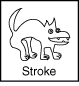
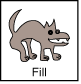
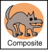
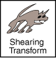
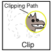

Feedback Form
|
|
Start of Tutorial > Start of Trail > Start of Lesson |
Search
Feedback Form |
The basic rendering mechanism is the same as in previous versions of the JDK--the drawing system controls when and how programs can draw. When a component needs to be displayed, itspaintorupdatemethod is automatically invoked with an appropriateGraphicscontext.The Java 2D API introduces
java.awt.Graphics2D, a new type of
Graphicsobject.Graphics2Dextends theGraphicsTo use Java 2D API features, you cast the
Graphicsobject passed intoacomponent's rendering method to aGraphics2Dobject.public void Paint (Graphics g) { Graphics2D g2 = (Graphics2D) g; ... }
The collection of state attributes associated with aGraphics2Dobject is referred to as the Graphics2D rendering context. To display text, shapes, or images, you set up the Graphics2D rendering context and then call one of the Graphics2D rendering methods, such asdraworfill. As the following figure shows, theGraphics2Drendering context contains several attributes.
 The pen style that is applied to the outline of a shape. This stroke attribute enables you to draw lines with any point size and dashing pattern and to apply end-cap and join decorations to a line.  The fill style that is applied to a shape's interior. This paint attribute enables you to fill shapes with solid colors, gradients, and patterns.  The compositing style that is used when rendered objects overlap existing objects.  The transform that is applied during rendering to convert the rendered object from user space to device-space coordinates. Optional translation, rotation, scaling, or shearing transforms can also be applied through this attribute.  The clip, which restricts rendering to the area within the outline of the Shapeused to define the clipping path. AnyShapecan be used to define the clip.The font used to convert text strings to glyphs.
Rendering hints that specify preferences in the trade-offs between speed and quality. For example, you can specify whether antialiasing should be used, if it's available. To set an attribute in the
Graphics2Drendering context, you use thesetAttributemethods:
setStrokesetPaintsetCompositesetTransformsetClipsetFontsetRenderingHintsWhen you set an attribute, you pass in the appropriate attribute object. For example, to change the paint attribute to a blue-green gradient fill, you would construct a
GradientPaintobject and then callsetPaint.gp = new GradientPaint(0f,0f,blue,0f,30f,green); g2.setPaint(gp);
Graphics2Dholds references to its attribute objects--they are not cloned. If you alter an attribute object that is part of theGraphics2Dcontext, you need to call the appropriatesetmethod to notify the context. Modifying an attribute object during rendering causes unpredictable behavior.
Graphics2Dprovides the following general rendering methods that can be used to draw any geometry primitive, text, or image:
draw--renders the outline of any geometry primitive, using the stroke and paint attributes.fill--renders any geometry primitive by filling its interior with the color or pattern specified by the paint attribute.drawString--renders any text string. The font attribute is used to convert the string to glyphs, which are then filled with the color or pattern specified by the paint attribute.drawImage--renders the specified image.In addition,
Graphics2Dsupports theGraphicsrendering methods for particular shapes, such asdrawOvalandfillRect.
|
|
Start of Tutorial > Start of Trail > Start of Lesson |
Search
Feedback Form |